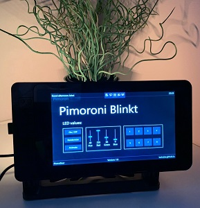

tl;dr
Nach langer Zeit habe ich einmal wieder Windows 10 IoT Core ausprobiert. Diesmal hat es so funktioniert wie ich es mir vorgestellt habe. Deswegen hab ich eine kleine App geschrieben welche Pimoroni Blinkt! LED-Leiste ansteuert.

Dank Open Source und GitHub konnte ich mich auch bei anderen Personen inspirieren und ein kleinen Einblick in “wie geht denn so etwas überhaupt mit GPIOs unter C#”.
Merci auch an Carey Payette (Twitch: cpayette) welche mich erst wieder an das Betriebssystem erinnert hat und die Liebe für blinkende Dinge mit mir teilt.
Quelltexte
Die mit vielen Kommentaren versehen Quelltexte zur App liegen wie immer auf meinem GitHub Profil im Repository dotnet-iot-homebear-blinkt. Als auch als Hackster.io Projekt zu finden.